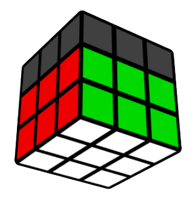

CFOP

CFOP Speedsolving Method
Cross, First 2 Layers, Orientation, Permutation (CFOP) is the most popular method for speedsolving the Rubik's Cube. It is the method used by all 3x3 world record holders in the last decade.
Make sure you know how to read move notation to follow the tutorials.
Steps
- First layer cross
- F2L
- OLL
- PLL
Advice
You should focus on new things to learn, in order to maximize improvement. I recommend learning OLL and PLL first, followed by F2L, and leaving the cross improvements for later. It will probably take a few days to properly memorize all of the algorithms. Memorizing too much at once will make you forget them, so try to avoid overlearning.
F2L is not that hard to understand at first, but practicing it is where most of your time investment will be. There are many different situations to recognize, and finding 2 pieces at once is definitely a step up. Expect to be slower at first since it's harder, but over time you will be much faster with F2L compared to the beginner method.
Practice is absolutely key for speedsolving. It's a lot easier to become knowledgeable about algorithms and concepts than it is to actually become fast at solving the cube. I know people who know many algorithms and take over 1 minute, as well as people who are sub-30 seconds with the beginner method because of how much they practice.
Next Steps
Learn good finger tricks to ensure you have high turning speed potential. Good habits are crucial for getting faster, since you don't have much time to think when you solve.
When you feel you are ready to move on, you can learn Advanced Cross, Advanced F2L, Full OLL, and Full PLL. There is no set time for when this should happen, but usually people approach this around sub-30 second averages. Good luck!